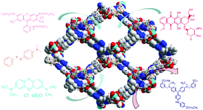

PET Degradation in situ with Carbon Dioxide using Dual Functional Metal-Organic Framework Nanocomposite
Summer 2022-Current
Polyethylene Terephalate (PET) is the plastic found in single-use water bottles and one of the main contributors to plastic pollution.
It takes around 450 years for the material to completely degrade on its own, and so finding way to reuse the material is of importance for
a sustainable environment. Similarly, carbon dioxide emissions have increased over the last century contributing to global warming, and finding ways to repurpose carbon dioxide
into value-added products is also a high priority.
In this project, I aim to transform both PET and carbon dioxide into value added products in situ using a Metal-Organic Framework nanocomposite.
I am interested in a catalyst with dual functions: to effectively catalyze carbon dioxide and hydrogen in methanol, and effectively utilize the methanol
in a methanolysis reaction to degrade PET into value added products. Stay tuned for more!
s

